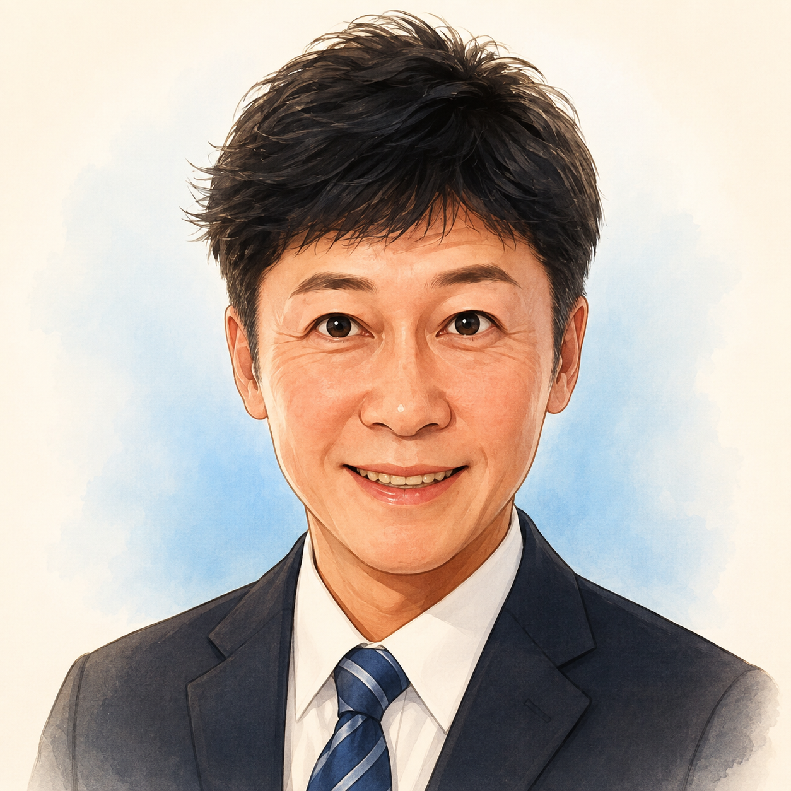

阪口 源太
福井県高浜町 青郷地区 横津海 出身（50歳）
「安心な高浜を、次世代へ。」
横津海の実家『阪口商店』で育ち、民間IT企業を創業・経営。東大松尾研等でAIの最前線を学び、元・沖縄県与那国町議会議員として地方議会の実務を経験。50歳を迎えた今、愛する故郷・高浜町のために持てるすべての知見と情熱を注ぎます。
🏫 学歴・出自のルーツ
- ● 昭和51年（1976年）生まれ: 50歳（団塊ジュニア世代）
- ● 実家・屋号: 高浜町青郷地区 横津海「阪口商店」（地域密着の生活インフラ）長男
- ● 学歴: 高浜町立青郷小学校 卒業 ／ 高浜町立高浜中学校 卒業 ／ 福井県立若狭高等学校 卒業
専門性と公的実績（客観的強み）
元 沖縄県与那国町議会議員
国境の町で一般質問、予算・決算特別委員会、条例制定、行政監視の実務を徹底経験。当選初日からフル稼働できる地方議会の即戦力です。
東京大学 松尾・岩澤研究室 集中講義 修了
深層生成モデル・深層学習基礎・Physical AI等の最先端AI技術を修得。行政AXやAIオンデマンド交通の具現化に直結します。
Google / IBM 認定プロフェッショナル
サイバーセキュリティおよび高度データ解析の国際基準プロフェッショナル認定を保持。原発立地町における重要インフラ防衛・公金IT監査を担います。
民間IT企業経営（起業家・IT福祉支援）
20年以上にわたるITビジネス経営と福祉・教育分野へのテクノロジー実装経験。税金に頼らない自立的な産業振興を推進します。
議会でのポジショニング（第3の選択肢）
単なる追認や批判ではなく、専門知見で具体的代替案を提示
町政の良い施策は即賛成・全力で後押しし、不備や課題にはITと現場目線で改善策を示します。
額面論争にとどまらず、積算根拠と投資対効果を厳格監査
100億円基金をハコモノ追認から守り、公金の無駄を省いて町民の命と医療・福祉へ回します。
選挙時だけの広報ではなく、LINEやWebで日常の声を常時集約
24時間365日、町民のお困りごとに耳を傾け、議会報告と双方向対話を恒常化します。